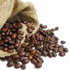
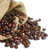

| Tipos de Café para degustar | ||||
| Tipo | Característica | Imagen | Precio | Sabor |
|---|---|---|---|---|
| Café Natural | Sabor suave y natural |  | 1,20 € | Intenso |
| Café Ecológico | Tratado sin productos químicos |  |
1,50 € | |
| Tipos de Café para degustar | ||||
| Tipo | Característica | Imagen | Precio | Sabor |
|---|---|---|---|---|
| Café Natural | Sabor suave y natural |  | 1,20 € | Intenso |
| Café Ecológico | Tratado sin productos químicos | |
1,50 € | |